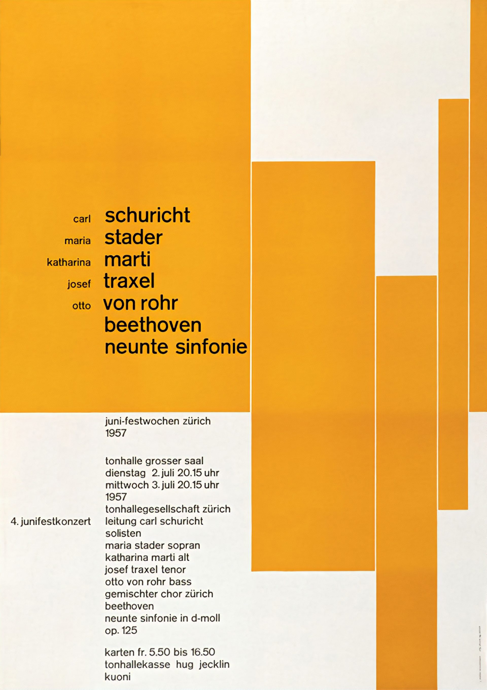

carl
maria
katharina
josef
otto
Schuricht
Stader
Marti
Traxel
Von rohr
Beethoven
Neunte sinfonie
4.junifeskonzert
Juni-festwochen Zürich
1957
Tonhalle grosser Saal
Dienstag 2.juli 20.15uhr
Mittwoch 3.juli 20.15uhr
1957
tonhallegesellschaft zürich
leitung carl schuricht
solisten
maria stader sopran
katharina marti alt
josef traxel tenor
otto von rohr bass
gemischter chor zürich
beethoven
neunte sinfonie in d-moll
op.125
karten fr. 5.50 bis 16.50
tonhallekasse hug jecklin
kuoni

Josef Muller Brockmann - Motion Poster. Hover to view origninal